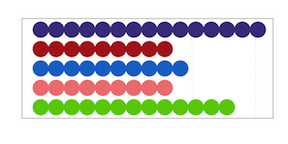
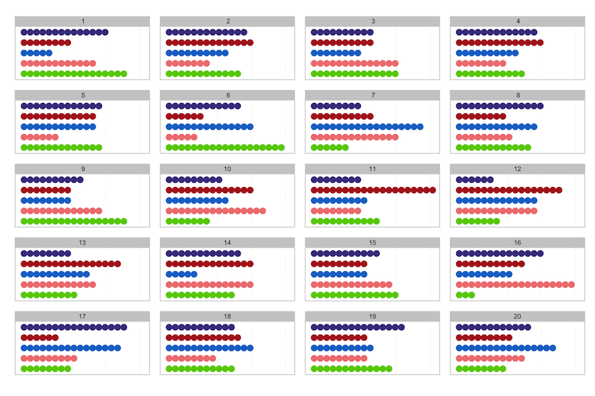
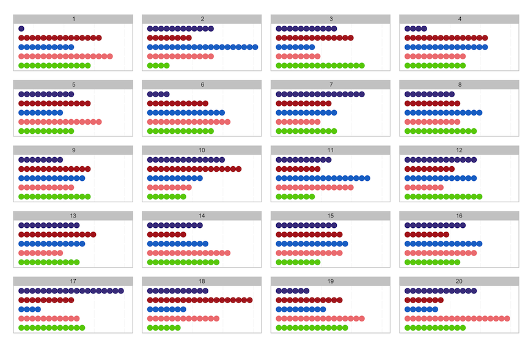
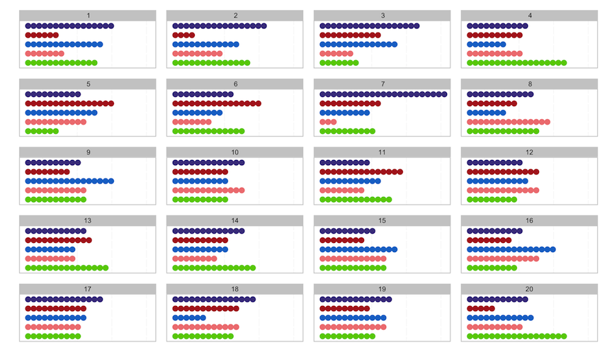

New version of nullabor package released
The new version of nullabor contains numerical measures that quantify how close the plot of the data is to the null plots in a lineup. It is very difficult to quantify all patterns that might be read from plots, so these should be taken in a spirit ofa Herculean task. The goal is to get some sense of what people are reacting to in a plot, which could be then associated with the text descriptions from people, or with data from an eyetracker.
To illustrate the use of the package, for doing inference using graphics, we adapt an example fro elementary statistics on the color distribution in packs of skittles^TM. Skittles come in different flavored bags - we will use the Wildberry packs, which have purple, red, blue, pink, and green. According to http://www.ask.com.
“In a batch of candies produced in the Skittles factory, there are equal amounts of the five colors all mixed together before being packaged into separate bags. Consequently, each color should represent approximately 20 percent of any one skittles bag.”
In 2.17oz bags there are supposed to be 56 skittles on average, give or take some deformities. We can use R to simulate the distribution of colors in a bag of skittles, assuming each color is packed with equal proportion, 20%, and use Alyssa Frazee’s RSkittleBrewer package to color the plot of the data to match the candy colors.

There were 15, 9, 10, 9, 13 purple, red, blue, pink, green skittles, with proportions 0.27, 0.16, 0.18, 0.16, 0.23 respectively. If you were to just look at this distribution, particularly if you don’t like the purple color, you might be tempted to think the Mars company is conspiring against you to put more purple skittles into the packs.
In an early statistics class, this might be tested using a hypothesis test:
Ho: p1=p2=p3=p4=p5 vs Ha: Not all equal
by calculating a X^2 test statistic with expected counts for each color equal to 11.2:
X^2=2.571, df=4, p-value=0.63. This is a large p-value, so you would conclude that there is no evidence to reject Ho, and you would conclude that the packs are actually produced using an equal proportion of all colors.
This requires that the audience knows a little statistics, and understands the logic behind hypothesis testing. If we were to examine the problem using the lineup protocol from visual inference, we would generate another 19 data sets from the null distribution and plot these along with the plot of the data. You would ask which of the 20 plots is the most different from the others (a little more general than asking specifically about the purple count, which enables more general discoveries of unexpected patterns).

Your bag is in position 19. There is a lot of variation from one plot to another, which happens when sampling from a uniform distribution. It is not unusual to obtain 15 of one color in a pack. Sampling does not yield a flat distribution each time, numbers of each category can vary wildly in packs of size 56.
If you are not convinced, here is a new example. Technically, you should not view a lineup of your plotted data, after you have already seen your data. It will always stand out because you recognize it. This time, you have not been told which bag was yours, so you are asked to find the plot among the 20 which has the strangest distribution, as a way to find your bag. We’ll tell you which is yours after you pick, but the answer is at the bottom of this page.

Among the bag counts, there are bags with as few as 1 purple skittle, and as many as 19. There is a bag with 19 red skittles, and yet another with 19 pink skittles, and oh, there is a bag with 20 blue skittles. The numbers of each color vary wildly from bag to bag.
Let’s switch up the scenario. Suppose you really are right, that the Mars company is filling bags with twice as many purple skittles as any other color. What would this look like? Here’s a lineup of your bag of skittles, where the company has filled it with a higher proportion of purple, compared with counts for bags filled using equal numbers. Pick the plot that is the most different.

If we were to conduct the hypothesis test for this data, the details would be:
X^2=19, df=4, p-value=0.0008
which would result in rejecting the null hypothesis and concluding that Mars was filling bags with too many purples. The actual proportions used to generate the data were 50% purple, and 12.5% for the other colors. The resulting samples look quite different in the plots, from those that were generated under the assumption that all colors are packed equally.
Using the lineup protocol is similar to the Sesame Street task, “one of these things is not like the other”. It enables illustrating statistical significance or lack of it, with less technical detail than the traditional hypothesis testing requires, and opens the door to many more problems where assumptions underlying formal hypothesis testing are not satisfied.
The second paragraph from http://www.ask.com provides more details on sampling variability:
“However, due to occasional errors in the mixing process, each small sample of the overall batch will likely have deviations from the 20 percent that each color should represent. In a perfect world, the candy batch would be completely uniform before packaging, resulting in the perfect proportion of Skittles for each bag. Because errors result in minor deviations, Skittles’ consumers can expect to have anywhere from a 15 to 23 percent composition of any color when they open their bag.”
The nullabor package makes it easy to generate lineups. Details on the package can be found here.
The position of the actual data plot in the latter two lineups were 17 and 7, respectively.